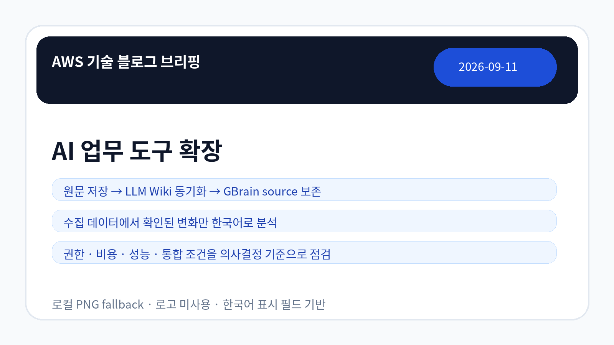
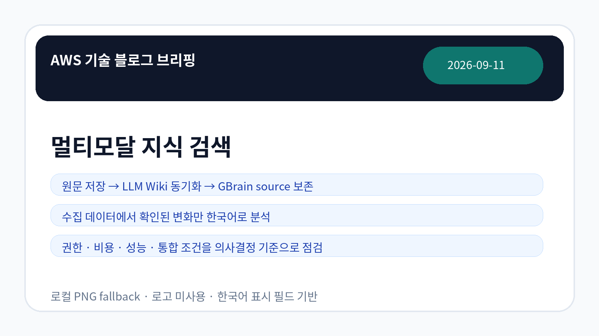
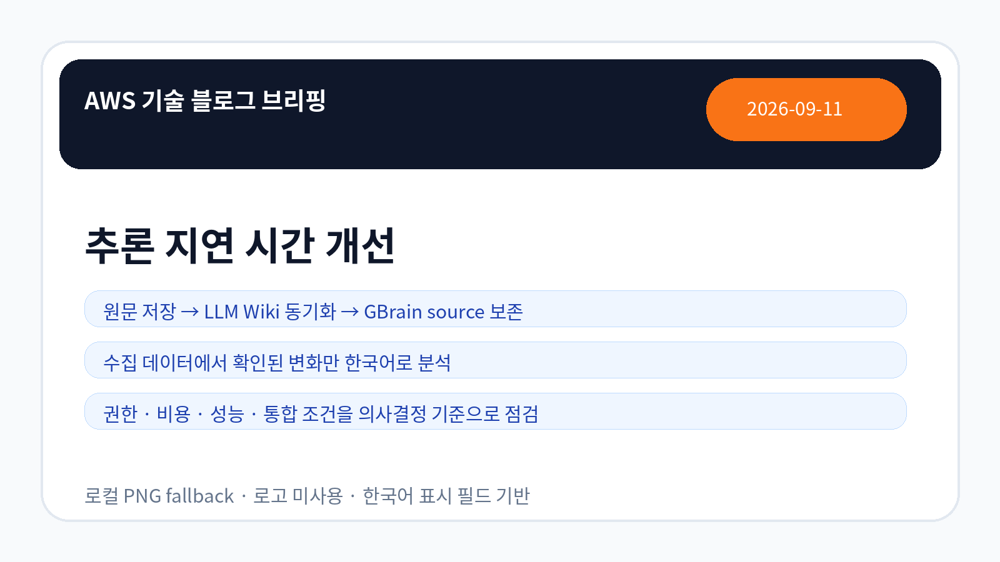

AI/ML
Amazon Quick 데스크톱 정식 출시와 업무형 AI 에이전트 적용 검토
AWS가 데스크톱 환경에서 Amazon Quick 정식 출시를 다뤘습니다. 기업은 업무 데이터 접근 권한, Microsoft 365 등 업무 도구 연동 범위, 사용자별 통제 모델을 원문 기준으로 확인해야 합니다.
원문 확인AWS 공식 블로그 수집 · LLM Wiki 동기화
오늘 저장·동기화된 AWS 공식 블로그 5건을 근거로, 기업 의사결정자가 확인해야 할 기술 변화와 검토 포인트를 한국어로 정리했습니다.

이미지 모드: 로컬 PNG fallback
확인한 AWS 공식 RSS는 3개이며, 오늘 신규 저장된 문서는 5건입니다. 화면에는 영어 RSS 원제를 노출하지 않고 별도 한국어 표시 필드만 렌더링했습니다.
Amazon Quick과 Quick Automate 관련 항목은 지식 업무와 문서 흐름 자동화를 검토할 신호로 볼 수 있습니다.
Amazon Bedrock Knowledge Base의 영상·이미지 검색 항목은 비정형 미디어 검색 품질과 권한 경계 검토 필요성을 보여줍니다.
SageMaker 관련 항목은 콜드 스타트와 LLM 지연 시간 완화가 설계 검토 대상임을 보여줍니다.

AI/ML
AWS가 데스크톱 환경에서 Amazon Quick 정식 출시를 다뤘습니다. 기업은 업무 데이터 접근 권한, Microsoft 365 등 업무 도구 연동 범위, 사용자별 통제 모델을 원문 기준으로 확인해야 합니다.
원문 확인AI/ML
AWS가 Amazon Quick Automate로 RFI 질의서 흐름을 구성하는 방식을 소개했습니다. 반복 문서 업무 자동화는 원문 데이터 품질, 승인 절차, 감사 추적성을 함께 점검해야 합니다.
원문 확인AI/ML
AWS가 Amazon SageMaker Inference에서 prefix-aware routing을 통한 LLM 지연 시간 완화를 다뤘습니다. 기업은 라우팅 정책이 비용, 응답 일관성, 모델 서빙 구조에 미치는 영향을 확인해야 합니다.
원문 확인AI/ML
AWS가 Amazon SageMaker HyperPod의 모델 캐싱을 통한 추론 콜드 스타트 완화를 다뤘습니다. 지연 시간 민감 워크로드에서는 캐시 전략과 비용·용량 계획을 함께 검토해야 합니다.
원문 확인AI/ML
AWS가 Amazon Bedrock Knowledge Base에서 Marengo 3.0 기반 영상·이미지 검색을 다뤘습니다. 비정형 미디어 지식 검색을 검토하는 조직은 검색 품질, 메타데이터, 권한 경계를 함께 확인해야 합니다.
원문 확인| 기사 | 게시 | 카테고리 | 링크 |
|---|---|---|---|
| Amazon Quick 데스크톱 정식 출시와 업무형 AI 에이전트 적용 검토 | 2026-09-11 | AI/ML | 원문 URL |
| Amazon Quick Automate로 RFI 질의서 처리 흐름 구성 | 2026-09-11 | AI/ML | 원문 URL |
| Amazon SageMaker Inference의 prefix-aware routing으로 LLM 지연 시간 완화 | 2026-09-11 | AI/ML | 원문 URL |
| Amazon SageMaker HyperPod 모델 캐싱으로 추론 콜드 스타트 완화 | 2026-09-11 | AI/ML | 원문 URL |
| Amazon Bedrock Knowledge Base의 Marengo 3.0 기반 영상·이미지 검색 활용 검토 | 2026-09-11 | AI/ML | 원문 URL |

| 관찰된 사실 | 근거 출처 URL | 기업 의사결정 시사점/리스크/기회 |
|---|---|---|
| AWS가 데스크톱 환경에서 Amazon Quick 정식 출시를 다뤘습니다. 기업은 업무 데이터 접근 권한, Microsoft 365 등 업무 도구 연동 범위, 사용자별 통제 모델을 원문 기준으로 확인해야 합니다. | 근거 URL | 도입 판단 전 권한, 비용, 성능, 기존 시스템 통합 조건을 원문 기준으로 검증해야 합니다. |
| AWS가 Amazon Quick Automate로 RFI 질의서 흐름을 구성하는 방식을 소개했습니다. 반복 문서 업무 자동화는 원문 데이터 품질, 승인 절차, 감사 추적성을 함께 점검해야 합니다. | 근거 URL | 도입 판단 전 권한, 비용, 성능, 기존 시스템 통합 조건을 원문 기준으로 검증해야 합니다. |
| AWS가 Amazon SageMaker Inference에서 prefix-aware routing을 통한 LLM 지연 시간 완화를 다뤘습니다. 기업은 라우팅 정책이 비용, 응답 일관성, 모델 서빙 구조에 미치는 영향을 확인해야 합니다. | 근거 URL | 도입 판단 전 권한, 비용, 성능, 기존 시스템 통합 조건을 원문 기준으로 검증해야 합니다. |
| AWS가 Amazon SageMaker HyperPod의 모델 캐싱을 통한 추론 콜드 스타트 완화를 다뤘습니다. 지연 시간 민감 워크로드에서는 캐시 전략과 비용·용량 계획을 함께 검토해야 합니다. | 근거 URL | 도입 판단 전 권한, 비용, 성능, 기존 시스템 통합 조건을 원문 기준으로 검증해야 합니다. |
| AWS가 Amazon Bedrock Knowledge Base에서 Marengo 3.0 기반 영상·이미지 검색을 다뤘습니다. 비정형 미디어 지식 검색을 검토하는 조직은 검색 품질, 메타데이터, 권한 경계를 함께 확인해야 합니다. | 근거 URL | 도입 판단 전 권한, 비용, 성능, 기존 시스템 통합 조건을 원문 기준으로 검증해야 합니다. |
이번 수집 데이터만으로 가격, 리전별 제공 여부, 세부 보안 조건을 단정하기는 어렵습니다. 따라서 실제 적용 전에는 원문 문서와 계정 환경 기준의 제공 조건을 재확인해야 합니다.